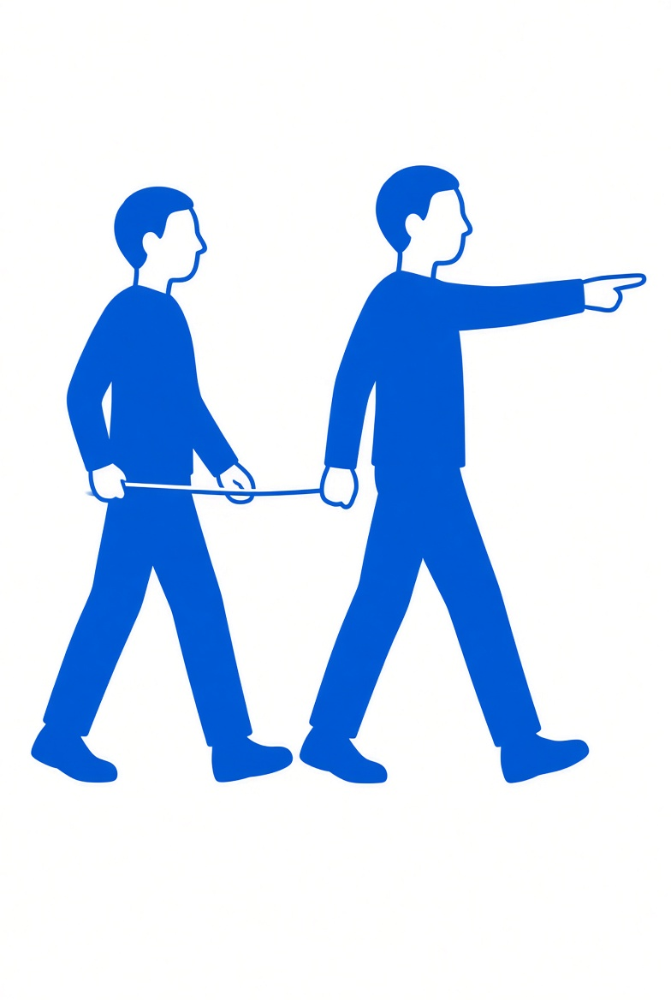
leiden
to lead
regelmatigrang 423Abstract & generalgetekend
- Scene
- one adult walks at the front of a small group with one arm raised straight forward and the hand pointing ahead; a second adult follows a step behind, and between them a thin taut rope is held at waist height by both. Both look ahead, not at each other.
- Must read
- one adult at the front with a raised arm, the second following on a rope.
- Avoid
- one adult walking behind another, both arms swinging (volgen); a hand held out flat at a car with its brake lights on (stoppen); a person swinging a flat bat with both hands (slaan); a person pushing ahead through a line (dringen).
- Contrast
- Pair with volgen. Same two walkers in a line: the raised arm and the front place are here, the same adult trails behind there.
- Alt text
- Een volwassene loopt voorop met de arm vooruit; een tweede volgt aan een touw tussen hen.
- Example
- De gids leidt de groep rond.
The guide leads the group around.
leiden.png · rang 423 · B1 regelmatig · lexicon woorden.tsv
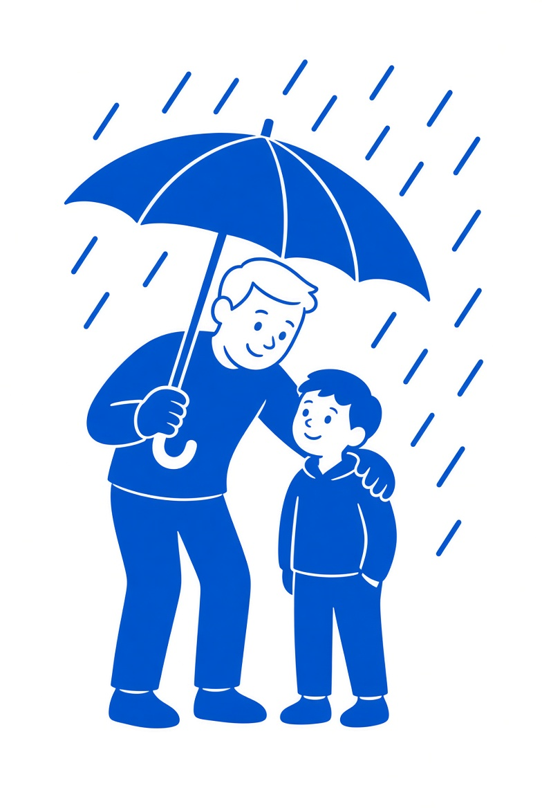
beschermen
to protect
regelmatigrang 687Abstract & generalgetekend
- Scene
- one adult bends over a small child and holds out a wide open umbrella over both of them, the handle gripped with one hand and the canopy tilted towards a slanting rain of plain bold strokes; the adult's free arm is curved around the child's shoulders.
- Must read
- an umbrella held over a child while an arm shields the shoulders.
- Avoid
- a note and a bag of apples meeting over a counter (betalen); one adult wrapping a blanket round a seated child (zorgen); an umbrella carried folded in one hand at the side (dragen); a raincoat on a hook.
- Alt text
- Iemand houdt een open paraplu boven een kind, de arm om de schouders, in de regen.
- Example
- Een helm kan je hoofd beschermen.
A helmet can protect your head.
beschermen.png · rang 687 · B1 regelmatig · lexicon woorden.tsv

stemmen
to vote
regelmatigrang 1400Society & politicsgetekend
- Scene
- one adult stands in a polling booth and slips a folded paper into a slot on the top of a plain box that has a small closed lid; the fingers are still on the paper, and a folded card lies on the shelf beside the box. No letters are on the paper or the card.
- Must read
- a folded paper slipping into the slot of a closed box.
- Avoid
- a note pushed across a shop counter (betalen); a raised hand with fingers apart (spreken); a hand in a raised fist (kunnen); a ballot box already full with the paper gone.
- Alt text
- Iemand schuift een dichtgevouwen papiertje in de gleuf van een houten kistje.
- Example
- Vandaag mogen wij stemmen voor een nieuwe gemeenteraad.
Today we may vote for a new municipal council.
stemmen.png · rang 1400 · B1 regelmatig · lexicon woorden.tsv
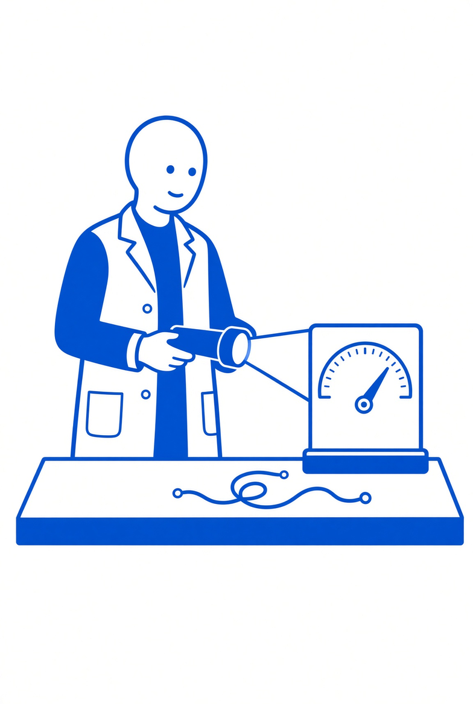
testen
to test
regelmatigrang 1421Education & learninggetekend
- Scene
- one adult in a white coat stands at a workbench and holds a bicycle lamp pointed straight at a light meter, the needle of the meter already near the top of its scale; the meter is a blank dial with tick marks only and no text, letters or numbers on it; a bright plain cone shows between lamp and meter, drawn as a white-filled cone with a cobalt outline, the same cobalt as everything else; two loose wires lie on the bench.
- Must read
- a lamp pointed at a meter whose needle has swung up.
- Avoid
- a pencil ticking lines on a list over stacked crates (controleren); a person with an eye to a microscope (onderzoeken); a sheet held up to a second person (tonen); a clipboard with letters; a battery in a tester.
- Alt text
- Iemand in een witte jas richt een fietslamp op een meter; de naald staat hoog.
- Example
- Wij testen het nieuwe programma vandaag.
We are testing the new programme today.
testen.png · rang 1421 · B1 regelmatig · lexicon woorden.tsv
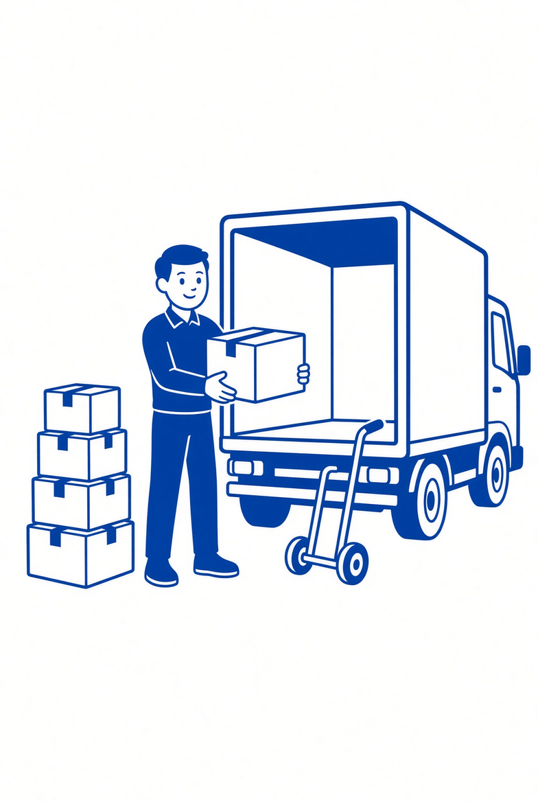
lossen
to unload
regelmatigrang 1439Transport & travelgetekend
- Scene
- one adult stands on the ground at the open back of a small lorry and lifts a closed cardboard box down off the empty lorry bed with both hands, the box clear of the bed and in the air, not set down; a neat stack of boxes already stands on the ground behind the adult, away from the lorry, and the lorry bed itself is empty; a hand truck leans against the bumper. Use exactly the same single flat cobalt as every other card, with no darker navy and no ground shadow ellipses or shading; both hands visibly grip the box's two sides, with the box in the air above the bed. Both hands are clearly visible, one on the left side and one on the right side of the box; the box is held directly over the empty lorry bed with the arms stretched toward the bed; keep every element at least 10% from the edges, with the stack of boxes smaller and moved in; one single flat ink tone only. The man's two hands grip the left and right sides of one box held in front of his chest; the box is in the air, outside the lorry, level with the empty bed; the lorry's cargo area is drawn as an empty outline with no boxes inside; the stack of boxes stands behind him.
- Must read
- a box lifted clear of a lorry, clear of the ground, above a row of boxes.
- Avoid
- a box held out towards a second person at the van's back (leveren); one adult alone with a box pressed to the chest (houden); a man pushing a broom across a floor (vegen); a fork-lift truck; a stack of boxes with a tick list.
- Alt text
- Iemand tilt bij de open vrachtwagen een doos omhoog; op de grond staan al andere dozen.
- Example
- De chauffeur lost de dozen bij de winkel.
The driver unloads the boxes at the shop.
lossen.png · rang 1439 · B1 regelmatig · lexicon woorden.tsv

vluchten
to flee
regelmatigrang 1448Movement & positiongetekend
- Scene
- one adult runs at full stretch from left to right, both feet off the ground, arms high, the head turned back over one shoulder, a small bag clutched in one hand; far behind at the left edge stand a second adult with both fists raised.
- Must read
- one adult running away with both feet off the ground, head turned back.
- Avoid
- an adult walking an ordinary stride past a chair (lopen); a person holding a bag against the chest with both hands (houden); a fistfight between two people (aanvallen); a lorry door being opened (lossen); a burning house or smoke.
- Alt text
- Iemand rent hard weg met losse voeten en kijkt over de schouder terug.
- Example
- De mensen vluchten voor het water.
The people are fleeing from the water.
vluchten.png · rang 1448 · B1 regelmatig · lexicon woorden.tsv

verzamelen
to collect
regelmatigrang 1495Movement & positiongetekend
- Scene
- one adult kneels on the floor beside an open box and holds up a small flat card, three of those cards already lying in the box; one hand sorts the rest of a fanned pile, eyes on a card, and the box holds nothing else.
- Must read
- a card held up above a box that already holds three more.
- Avoid
- one adult kneeling to reach under a sofa cushion (zoeken); coins pushed across a counter (betalen); a glass held down onto a table by one hand (zetten); a net and a butterfly; a full album with a row of photos.
- Alt text
- Iemand houdt een kaartje boven een open doos waarin er al drie liggen.
- Example
- Mijn broertje verzamelt oude munten.
My little brother collects old coins.
verzamelen.png · rang 1495 · B1 regelmatig · lexicon woorden.tsv

herstellen
to recover
regelmatigrang 1560Body & healthgetekend
- Scene
- one adult sits in a chair with one bandaged leg stretched out on a low footstool and a crutch propped beside the chair, reaching down with one hand to lift a cup from a small side table. A folded newspaper lies on the knee, and nothing else is in the room.
- Must read
- a bandaged leg up on a stool and a hand reaching for a cup.
- Avoid
- one adult at a workbench turning a screwdriver in a broken chair (repareren); a person bent over a table nailing planks (maken); a knee and both hands hitting the ground (zakken); a hospital bed; a medicine bottle.
- Alt text
- Iemand zit met een verband om het been op een voetenbankje, een kruk ernaast, en pakt een kop.
- Example
- Mijn vader herstelt snel na de operatie.
My father recovers quickly after the operation.
herstellen.png · rang 1560 · B1 regelmatig · lexicon woorden.tsv

steunen
to support
regelmatigrang 1597Character & behaviourgetekend
- Scene
- one adult stands with one shoulder under the arm of a second adult who leans heavily with a bandaged ankle, one arm around the first's neck; the helper's other hand is flat on the leaning person's back, and both walk. The leaning person's near arm is draped across the back of the helper's neck and shoulders with the hand hanging over the far shoulder; the helper's near hand is flat on the leaning person's back and the helper's shoulder is under the leaning person's armpit. The leaning man's near arm lies across the back of the helper's neck and shoulders with the hand hanging over the far shoulder; the helper's near hand is flat on the leaner's back at waist height, seen from behind or beside; the helper's arm stays off the leaner's shoulders. The leaning man's arm lies across the back of the helper's neck and shoulders; nothing of the helper's arm goes over the leaner's shoulders or round his waist; the helper's hand is flat on the leaner's back with the fingers visible against the leaner's torso.
- Must read
- a leaning person's arm over another's shoulder, one hand flat on the back.
- Avoid
- one person lifting a box with both hands (lossen); two people with their hands clasped and a gold ring (trouwen); a hand laid on a table edge (raken); a walking stick alone; coins dropping into a hat (betalen).
- Alt text
- Iemand laat een manke ander op de schouder leunen, de arm om de nek en een hand op de rug.
- Example
- Wij steunen onze vriend na het ongeluk.
We support our friend after the accident.
steunen.png · rang 1597 · B1 regelmatig · lexicon woorden.tsv

plannen
to plan
regelmatigrang 1600Timegetekend
- Scene
- one adult sits at a plain table with a big blank weekly planner lying open; one hand slides a small block with a finger across the page and a group of empty squares below is marked in dark ink. A pen stands upright in a holder, and no letters or digits appear. The grid squares are empty outlines, with a few solid filled squares as the marked ones and no crosses or letters; the planner and table are smaller, with at least 10% white margin on every side.
- Must read
- a finger sliding one block across a grid of marked empty squares.
- Avoid
- a phone at the ear over a calendar with one day circled (boeken); a hand turning the cover of a closed notebook (beginnen); a person walking away leaving keys on a table (vergeten); a note pushed across a counter (betalen).
- Alt text
- Iemand schuift met een vinger een blokje langs de vakjes van een open weekschema.
- Example
- Wij plannen een reis naar Italië.
We are planning a trip to Italy.
plannen.png · rang 1600 · B1 regelmatig · lexicon woorden.tsv

rekenen
to calculate
regelmatigrang 1624Quantity & measuregetekend
- Scene
- one adult sits at a plain desk with a wooden frame abacus in front of them, one finger pushing a single bead along its rod while the other hand holds a pencil over a blank pad; eyes on the beads. No digits on the pad, no screen, nothing else in the picture.
- Must read
- a finger pushing a bead along the rod of an abacus.
- Avoid
- a finger touching apples in a row one by one (tellen); a calculator with a display of numbers; a pen writing a long line on paper (schrijven); a coin purse and notes (betalen); any digit or sign.
- Alt text
- Iemand zit aan een bureau en schuift met een vinger een kraal langs de stang van een telraam.
- Example
- Ik kan goed rekenen.
I am good at arithmetic.
rekenen.png · rang 1624 · B1 regelmatig · lexicon woorden.tsv
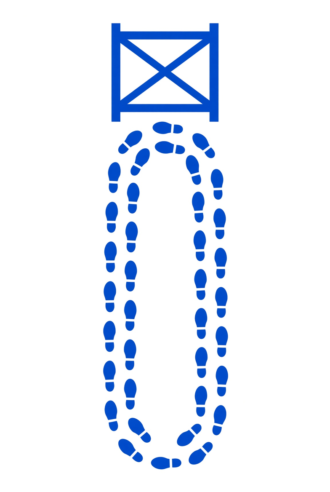
keren
to turn (back)
regelmatigrang 1700Movement & positiongetekend
- Scene
- no person: one single row of bold shoe-shaped footprints leads straight up the page towards a closed gate and then bends sharply round in a tight U-turn and comes back down alongside itself; the footprints are thick and clear; the gate is a plain bold outline at the top. Nothing else.
- Must read
- footprints that go forward and then turn back on themselves.
- Avoid
- a person turning a round tap handle with both hands (draaien); a person walking away towards the horizon (lopen); two people turning in a circle (dansen); a person looking over a shoulder at a left-behind key (vergeten); a curved arrow.
- Alt text
- Voetafdrukken lopen naar een hek en draaien daar weer om.
- Example
- We moeten keren, we zijn te ver gereden.
We have to turn back, we have driven too far.
keren.png · rang 1700 · B1 regelmatig · lexicon woorden.tsv

ontsnappen
to escape
regelmatigrang 1766Emotion & feelinggetekend
- Scene
- one bird flies up and out through a wide open cage door, the cage drawn as a plain bold-outlined cage with a few bars and the door swung open; the bird is already outside the door in the air with its wings spread. No person.
- Must read
- a bird flying out through an open cage door.
- Avoid
- a person climbing over a wall with a ladder (klimmen); a person running with nothing behind (rennen); an open cage door with a bird; a person unlocking a door with a key (openen); a person lying on a sofa with arms spread (ontspannen).
- Alt text
- Een vogel vliegt door de open deur van een kooi naar buiten.
- Example
- De gevangene probeert te ontsnappen.
The prisoner tries to escape.
ontsnappen.png · rang 1766 · B1 regelmatig · lexicon woorden.tsv
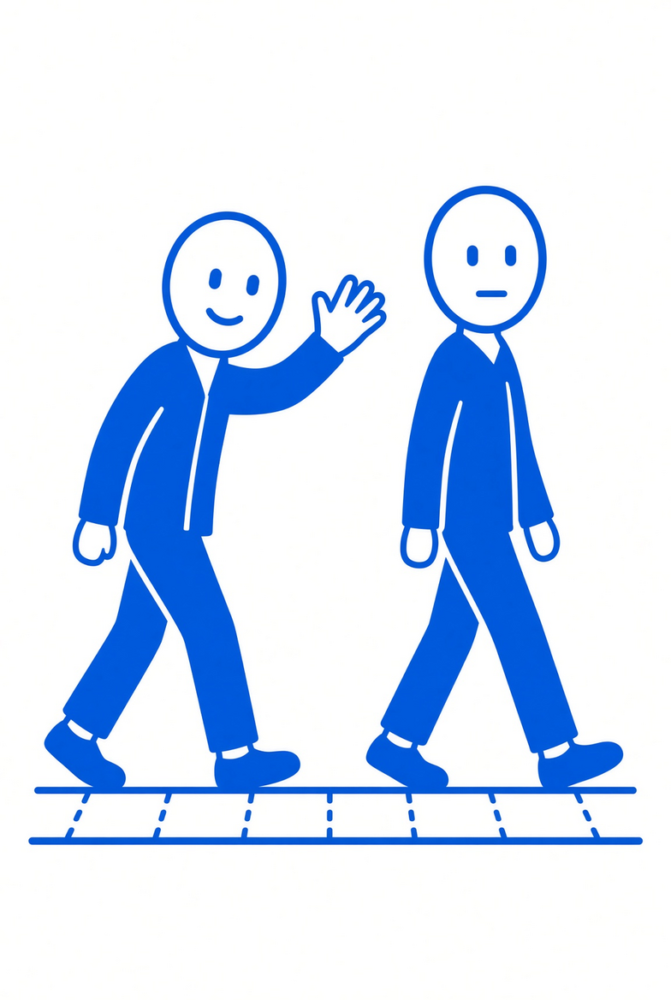
negeren
to ignore
regelmatigrang 1854Abstract & generalgetekend
- Scene
- two adults on a plain pavement: the one on the left lifts an arm in a wave and leans forward towards the other; the one on the right walks straight past with eyes fixed ahead, face blank, not turning the head. No other objects.
- Must read
- one person waving and the other walking past without turning the head.
- Avoid
- two people shaking hands (groeten); two people waving at each other (zwaaien); one person with arms folded and a frown (boos); one person with eyes on a phone; one person running away.
- Alt text
- Iemand zwaait naar een ander die recht vooruit kijkt en zonder het hoofd te draaien langsloopt.
- Example
- Hij probeert zijn buurman te negeren.
He tries to ignore his neighbour.
negeren.png · rang 1854 · B1 regelmatig · lexicon woorden.tsv

weigeren
to refuse
regelmatigrang 2323Abstract & generalgetekend
- Scene
- two adults stand facing each other an arm's length apart. The one on the left holds out a plate with a slice of cake; the one on the right holds one flat open palm up and forward to keep it away, chin turned slightly aside, eyes on the plate. Above the head of the person refusing (palm up) floats one bold solid cobalt arrow pointing straight down at the head, with a clear white gap between arrow tip and hair; it marks who performs the verb. The other person has no arrow. No text.
- Must read
- a flat palm held up against an offered plate while the head turns away.
- Avoid
- a plate handed over and taken in both hands (geven); a person eating the cake (eten); a hand raised in a wave (zwaaien); only a head shaking with no plate (nee zeggen); a crossed-out symbol.
- Alt text
- Twee mensen staan tegenover elkaar; de een biedt een bord met taart aan, de ander houdt een open hand ervoor.
- Example
- De hond weigert te eten.
The dog refuses to eat.
weigeren.png · rang 2323 · B1 regelmatig · lexicon woorden.tsv

rusten
to rest
regelmatigrang 2375Abstract & generalgetekend
- Scene
- one adult sits leaning back on a plain park bench, arms spread along the backrest and legs stretched out and crossed at the ankle, eyes open and looking at the sky, shoulders loose. Nothing else in the picture.
- Must read
- a person leaning fully back on a bench with loose shoulders and stretched legs.
- Avoid
- a person lying in bed with closed eyes (slapen); a person sitting upright at a table (zitten); a person on a cushion with a book (lezen); a cup or a phone in the hand; zzz marks.
- Alt text
- Iemand zit achterover op een bankje met de armen langs de rugleuning en de benen uitgestrekt.
- Example
- Na het werk wil ik even rusten.
After work I want to rest for a bit.
rusten.png · rang 2375 · B1 regelmatig · lexicon woorden.tsv

trappen
to kick (a can, a ball)
regelmatigrang 2382Transport & travelgetekend
- Scene
- one adult stands on the left leg in an empty yard, the right leg swung forward at the moment of impact, the foot just meeting a tin can that is lifting off the ground at the right. The adult looks at the can. No goal and no ball. There are no motion arcs near the can and no marks on the ground; the ground is one plain straight line, or none.
- Must read
- a swung foot meeting a can that is leaving the ground.
- Avoid
- a ball shot into a goal (scoren); a leg lifted for a step, with the can untouched (lopen); a foot on a bicycle pedal (fietsen); a fist striking the can (slaan); speed lines or dust puffs.
- Alt text
- Iemand staat op een been en schopt met de andere voet tegen een blikje dat van de grond komt.
- Example
- Hij trapt een leeg blikje van de stoep.
He kicks an empty can off the pavement.
trappen.png · rang 2382 · B1 regelmatig · lexicon woorden.tsv

scoren
to score
regelmatigrang 2411Sport & gamesgetekend
- Scene
- one adult follows through after a shot on a small grass pitch, standing on the left leg with the right leg still swinging up; a football sits in the back of a goal net at the right, the net bulging behind it, and the goalkeeper is not drawn. Draw the goal as an open frame with several net lines (bold outline only, no fill), the ball resting at the back against the net, and a short grass baseline.
- Must read
- a football lying in the net of a goal, with the kicker still in follow-through.
- Avoid
- a foot hitting a tin can in a yard (trappen); a person dribbling a ball down the pitch (voetballen); a player with raised arms and a trophy (winnen); a ball flying wide of the goal; a scoreboard.
- Alt text
- Iemand zwaait na een schot het been door; de bal ligt achter in het net van een doel.
- Example
- Onze spits scoort in de laatste minuut.
Our striker scores in the last minute.
scoren.png · rang 2411 · B1 regelmatig · lexicon woorden.tsv
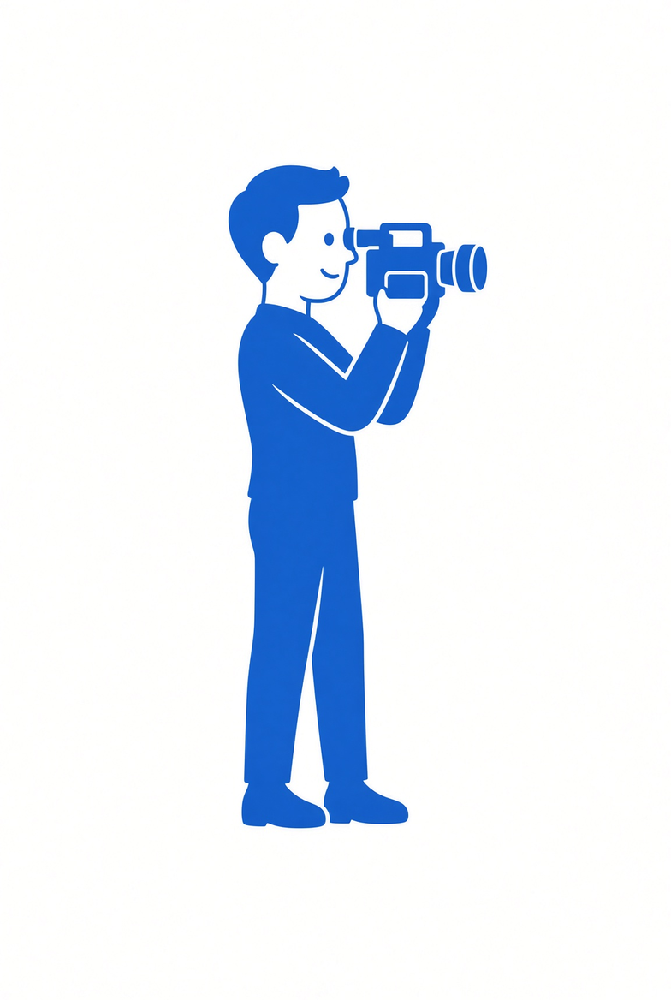
filmen
to film
regelmatigrang 2433Arts & mediagetekend
- Scene
- one adult stands side-on, full figure head to feet, holding a boxy video camera up to one eye with both hands, the lens pointing straight ahead; nothing else in the picture.
- Must read
- an adult with a video camera held to one eye.
- Avoid
- a phone held up for a still picture (fotograferen); a person watching a television (kijken); a spotlight and a clapper board; a flash; a tripod with nobody behind it.
- Alt text
- Iemand houdt met beide handen een videocamera voor het oog.
- Example
- Mijn zus filmt de kinderen in de tuin.
My sister films the children in the garden.
filmen.png · rang 2433 · B1 regelmatig · lexicon woorden.tsv
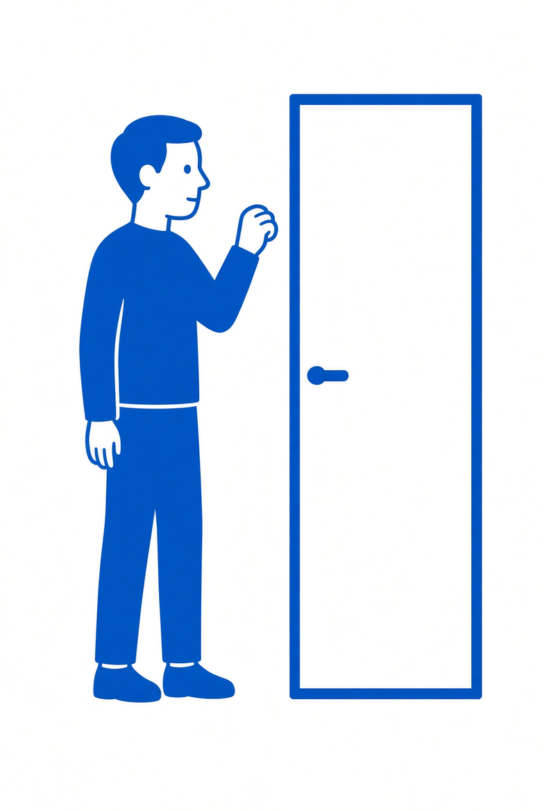
kloppen
to knock, to beat
regelmatigrang 2491Abstract & generalgetekend
- Scene
- one adult stands facing a closed plain door and knocks on it with the knuckles of a bent hand held at head height, the other arm hanging at the side; the door has a handle and no window, no sign, and no bell. Only the person and the door are in the picture.
- Must read
- knuckles meeting a closed door.
- Avoid
- a hand pressing a doorbell (bellen); a hand turning the handle (openen); a fist hitting a person (slaan); a mallet on a nail (hameren); sound marks.
- Alt text
- Iemand staat voor een dichte deur en tikt met de knokkels van een gebogen hand tegen het hout.
- Example
- Iemand klopt zachtjes op de deur.
Someone knocks softly on the door.
kloppen.png · rang 2491 · B1 regelmatig · lexicon woorden.tsv

kloppen (eieren)
to beat (eggs)
regelmatigrang 2491Food & drinkgetekend
- Scene
- One adult stands at a kitchen counter, holding a small bowl steady with the left hand and cracking an egg against the rim with the right; the shell is split and the yolk is dropping into the bowl. Two whole eggs lie on the counter. Nothing else in the picture.
- Must read
- an egg split at the rim of a bowl, the yolk dropping in.
- Avoid
- knuckles on a closed door (kloppen); a fork stirring eggs in a bowl (mengen); a hand turning a knife through a carrot (snijden); a hand pressing a doorbell (bellen); a pan of eggs already set on the hob (bakken).
- Alt text
- Een volwassene breekt een ei boven een kom en laat de dooier in de kom vallen.
- Example
- Ik klop twee eieren in een kom.
I beat two eggs in a bowl.
kloppen-eieren.png · rang 2491 · B1 regelmatig · lexicon woorden.tsv

sparen
to save (money)
regelmatigrang 2612Money & tradegetekend
- Scene
- one adult drops a single coin into the slot of a ceramic piggy bank held steady in the other hand, the coin standing in mid-air a finger’s width above the slot; a small tin of coins stands closed beside it and no shop counter is in the frame.
- Must read
- one coin halfway down into the slot of a piggy bank.
- Avoid
- coins pushed across a counter (betalen); a coin held up close to one eye; a piggy bank smashed open; a purse held tight to the chest (houden); banknotes fanned out like a prize.
- Alt text
- Iemand laat een muntje net boven de gleuf van een aardewerken varkentje zakken.
- Example
- Ik spaar elke maand geld voor een fiets.
I save money for a bike every month.
sparen.png · rang 2612 · B1 regelmatig · lexicon woorden.tsv
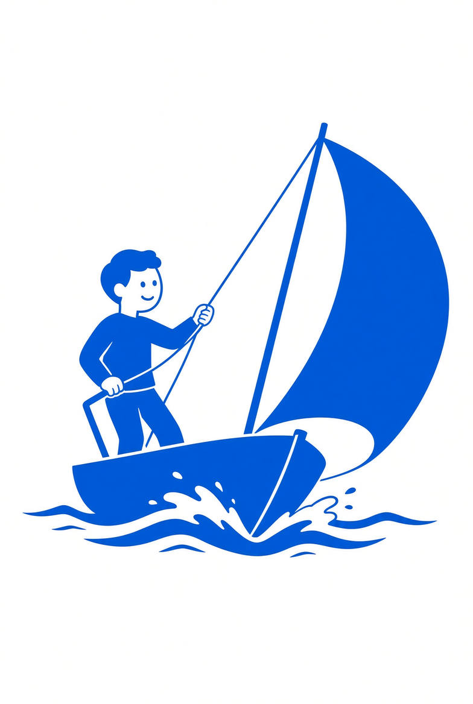
zeilen
to sail (with a sail)
regelmatigrang 2694Transport & travelgetekend
- Scene
- one adult stands at the tiller of a small sailing boat and holds the mainsheet taut with the other hand; the wind has the big sail curved out to one side and the hull is heeled over, spray at the bow. The boat sits on open water, not in a harbour.
- Must read
- a sail filled by the wind and one hand on the tiller.
- Avoid
- an adult rowing with both oars (roeien); a motorboat with no sail; a ship’s wheel turned by two hands on a big deck; a person standing on a dock with a suitcase (reizen); a flag on a pole (zwaaien).
- Alt text
- Een volwassene staat aan het roer van een bootje; de wind bolt het grote doek aan de mast.
- Example
- In de zomer gaan wij zeilen op het IJsselmeer.
In summer we go sailing on the IJsselmeer.
zeilen.png · rang 2694 · B1 regelmatig · lexicon woorden.tsv

schudden
to shake
regelmatigrang 3070Movement & positiongetekend
- Scene
- one adult stands and holds a closed bottle upright in one fist at chest height, moving it hard up and down; two short curved movement marks sit above and below the bottle, and the other hand hangs free.
- Must read
- a closed bottle in a fist with movement marks above and below it.
- Avoid
- a bottle tipped to pour into a glass (gieten); a bottle at the lips (drinken); two people clasping hands (begroeten); a hand waving in the air (zwaaien).
- Alt text
- Iemand houdt een dichte fles stevig vast; korte boogjes boven en onder de fles tonen een beweging op en neer.
- Example
- Schud de fles voor gebruik goed.
Shake the bottle well before use.
schudden.png · rang 3070 · B1 regelmatig · lexicon woorden.tsv

pikken
to peck
regelmatigrang 3542Animalsgetekend
- Scene
- one hen stands on a bare farmyard, the body tipped forward and the beak touching the ground among a scatter of grain; one grain sits at the tip of the beak. No person, no fence and nothing else in the picture; the hen is drawn large and fills most of the frame.
- Must read
- a hen's beak striking the ground among scattered grain.
- Avoid
- a hand throwing grain or bread to the birds (voeren); cows with their heads down in the grass (grazen); a hen sitting on a nest of eggs; a hen dipping the beak into a bowl of water (drinken).
- Alt text
- Een kip staat voorover met de snavel op de grond tussen losse korrels.
- Example
- De kip pikt het graan van de grond.
The chicken pecks the grain from the ground.
pikken.png · rang 3542 · B1 regelmatig · lexicon woorden.tsv
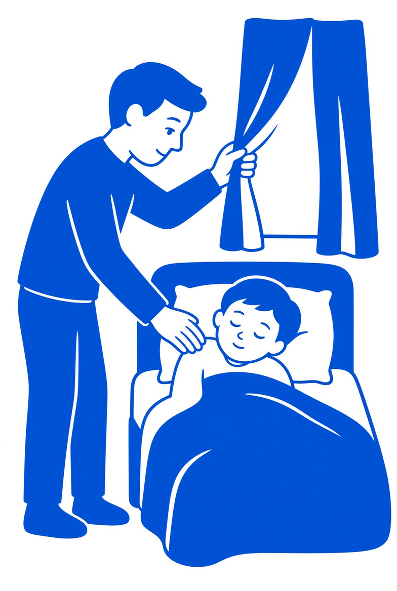
wekken
to wake (someone)
regelmatigrang 3705House & homegetekend
- Scene
- one adult bends over a bed and gently shakes the shoulder of a child who lies asleep under the blanket, eyes still shut; the adult's other hand draws the curtain a little open. No clock in the picture.
- Must read
- a hand shaking a sleeping child's shoulder.
- Avoid
- a person lying asleep alone (slapen); a closed bottle shaken in a fist (schudden); a person calling with cupped hands (roepen); a blanket tucked in round a child (zorgen).
- Alt text
- Een volwassene legt een hand op de schouder van een kind in bed; het kind heeft de ogen nog dicht.
- Example
- Ik wek mijn zoon om zeven uur.
I wake my son at seven o'clock.
wekken.png · rang 3705 · B1 regelmatig · lexicon woorden.tsv
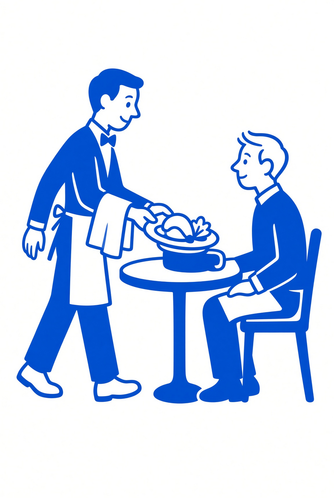
serveren
to serve (food)
regelmatigrang 3793Food & drinkgetekend
- Scene
- one waiter in an apron walks up to a small table and lowers a plate of food onto it in front of a seated guest; a cloth hangs over the waiter's forearm and the guest looks up.
- Must read
- a waiter lowering a plate in front of a seated guest.
- Avoid
- a person eating at a table (eten); a person at a stove with a pan (koken); a box handed out of a van (leveren); coins on a counter (betalen).
- Alt text
- Een ober met een schort zet een bord eten neer bij een gast die aan een tafeltje zit.
- Example
- De ober serveert de soep als eerste.
The waiter serves the soup first.
serveren.png · rang 3793 · B1 regelmatig · lexicon woorden.tsv

slikken
to swallow
regelmatigrang 4007Body & healthgetekend
- Scene
- one adult stands with the head tipped back, a small pill on the tip of the tongue and a glass of water raised close to the lips in one hand. Nothing else in the picture. A clearly visible, oversized round pill rests on the stretched-out tongue in the open mouth; the glass is raised near the lips but not tilted into the mouth.
- Must read
- a pill on the tongue with the head tipped back and a glass at the lips.
- Avoid
- a cup at the lips with the head level (drinken); a fork lifted to the mouth (eten); a spoon tasted at a pot (proeven); a hand on the stomach.
- Alt text
- Iemand houdt het hoofd achterover met een pil op de tong en een glas water bij de lippen.
- Example
- Ik kan door mijn keelpijn bijna niet slikken.
I can hardly swallow because of my sore throat.
slikken.png · rang 4007 · B1 regelmatig · lexicon woorden.tsv

zwaaien
to wave (a flag)
regelmatigrang 4135Movement & positiongetekend
- Scene
- one adult stands alone on an open field and swings a large plain flag on a short pole in a wide arc above the head, both hands on the pole and the cloth streaming out sideways; two curved motion lines follow the arc. The flag is blank: no emblem, stripes or lettering.
- Must read
- a plain flag swung in a wide arc above the head.
- Avoid
- one open hand raised to a person across the street (groeten); a sail filled by the wind (zeilen); a hat flying off in the wind (waaien); a string of paper flags hung on a wall (versieren).
- Alt text
- Iemand houdt met twee handen een stok vast en beweegt een grote vlag in een wijde boog boven het hoofd.
- Example
- Wij zwaaien met de vlag tijdens de optocht.
We wave the flag during the parade.
zwaaien.png · rang 4135 · B1 regelmatig · lexicon woorden.tsv

versieren
to decorate
regelmatigrang 4239House & homegetekend
- Scene
- one adult stands on a low stepladder and hangs a string of small paper flags across a wall, fixing one end to a hook; an open cardboard box of more flags stands on the floor. The flags are plain, with no letters.
- Must read
- a string of paper flags being hung across a wall.
- Avoid
- a picture painted on a canvas (schilderen); a parcel wrapped in paper (verpakken); a strip of wallpaper smoothed on a wall (behangen); a rope tied round firewood (binden).
- Alt text
- Iemand staat op een trapje en hangt een slinger met papieren vlaggetjes langs de muur.
- Example
- Wij versieren de kamer voor het feest.
We decorate the room for the party.
versieren.png · rang 4239 · B1 regelmatig · lexicon woorden.tsv
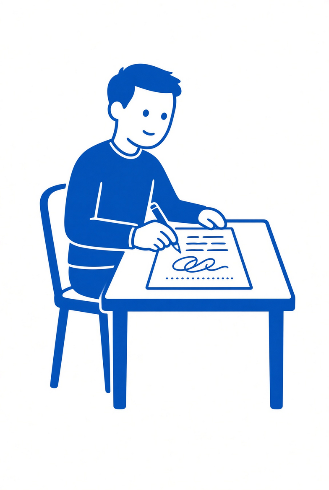
ondertekenen
to sign
regelmatigrang 4274Work & jobsgetekend
- Scene
- one adult sits at a plain desk and holds a single sheet flat with one hand; the pen in the other hand rests at the end of a dotted line near the bottom, a loose looping scribble just drawn along it. The rest of the sheet holds only greeked strokes, no readable letters.
- Must read
- a pen finishing a loose scribble on a dotted line at the foot of a sheet.
- Avoid
- a pencil drawing a picture (tekenen); fingers on a keyboard (typen); a rubber stamp on a folder (registreren); a sheet ripped in two (scheuren); two people at a table handing over keys (huren).
- Alt text
- Iemand zet met een pen een krul op de stippellijn onderaan een vel papier.
- Example
- U moet het contract hier ondertekenen.
You have to sign the contract here.
ondertekenen.png · rang 4274 · B1 regelmatig · lexicon woorden.tsv

lekken
to leak
regelmatigrang 4467House & homegetekend
- Scene
- a kitchen tap over an empty sink lets a single drop fall from its spout although the handle is turned fully shut; a second drop has just splashed in the sink. One adult in pyjamas stands beside the sink at night and looks at the tap with a frown.
- Must read
- a drop falling from a tap that is turned off.
- Avoid
- water gushing from an open tap (stromen); hands under a running tap (wassen); water running off a soaked coat (druipen); rain falling outdoors (regenen).
- Alt text
- Uit een dichtgedraaide kraan valt één druppel in de lege gootsteen; iemand in pyjama kijkt er boos naar.
- Example
- Het dak lekt als het hard regent.
The roof leaks when it rains hard.
lekken.png · rang 4467 · B1 regelmatig · lexicon woorden.tsv

zaaien
to sow
regelmatigrang 4538Plants & farminggetekend
- Scene
- one adult walks along a strip of bare tilled soil and scatters seeds from a cupped hand in a wide arc, a small bag of seed hanging from the other arm; the seeds are in the air between the hand and the ground.
- Must read
- seeds flying from an open hand onto bare soil.
- Avoid
- a young plant with roots pressed into a hole (planten); a spade lifting soil (graven); water sprayed at a plant (spuiten); bread thrown to ducks (voeren).
- Contrast
- Pair with planten. Same prepared bed: a handful of seeds flies from an open hand here, one rooted plant goes into a hole there.
- Alt text
- Iemand loopt langs kale aarde en strooit met een wijd gebaar korrels uit de hand.
- Example
- De boer zaait in het voorjaar graan.
The farmer sows grain in spring.
zaaien.png · rang 4538 · B1 regelmatig · lexicon woorden.tsv
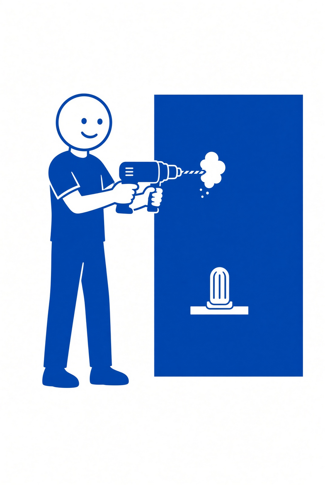
boren
to drill
regelmatigrang 4659Technology & toolsgetekend
- Scene
- one adult stands at a wall holding an electric drill level with both hands, the bit going into the wall; a small cloud of dust comes out of the hole and a wall plug waits on a shelf below. The wall is a wide solid cobalt panel filling the right side, and the drill bit is buried in the wall surface with dust puffing from the hole.
- Must read
- a drill bit going into a wall.
- Avoid
- a hammer on a nail (maken); a spanner on a bicycle (repareren); a sledgehammer on bricks (slopen); a saw through a plank (zagen).
- Alt text
- Iemand houdt een elektrisch apparaat met beide handen tegen de muur; uit het gaatje komt stof.
- Example
- Mijn vader boort een gat in de muur.
My father drills a hole in the wall.
boren.png · rang 4659 · B1 regelmatig · lexicon woorden.tsv
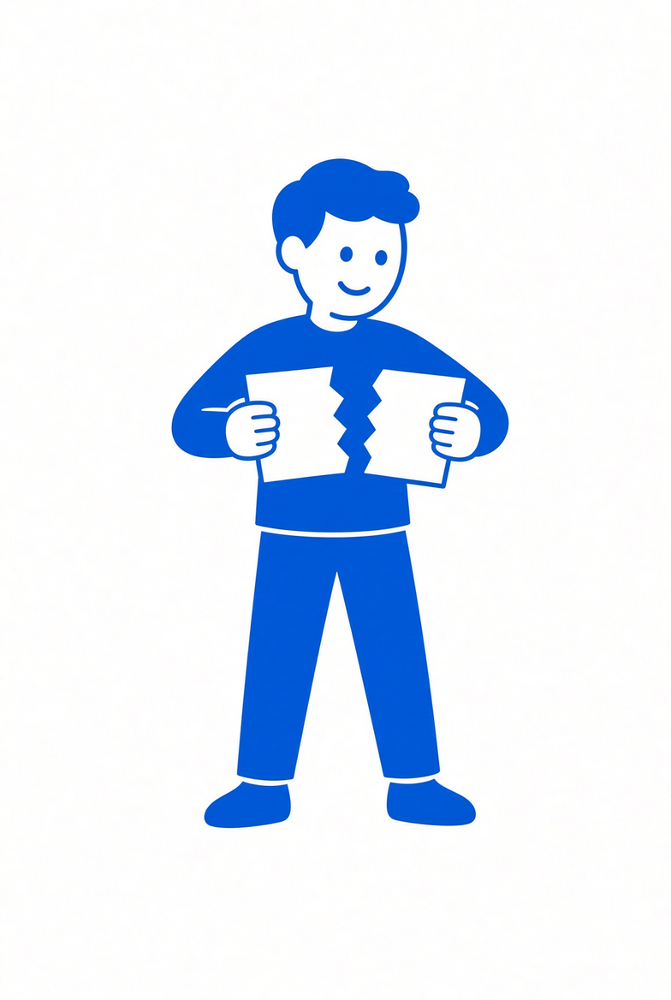
scheuren
to tear
regelmatigrang 4768Body & healthgetekend
- Scene
- one adult holds a sheet of paper in both hands and pulls the hands apart in opposite directions, the sheet ripping down the middle with a jagged edge; both halves are still in the hands.
- Must read
- a sheet of paper ripping in two between two hands.
- Avoid
- scissors cutting a strip (knippen); two tangled cords pulled apart (scheiden); a crumpled sheet dropped in a bin (verwijderen); a T-shirt folded in half (vouwen).
- Contrast
- Pair with knippen. Same sheet of paper in the same hands: the hands pull the sheet apart here, the scissors cut a clean strip there.
- Alt text
- Iemand trekt met twee handen een vel papier uit elkaar; er loopt een rafelige rand door het midden.
- Example
- Pas op, anders scheur je het papier.
Be careful, or you will tear the paper.
scheuren.png · rang 4768 · B1 regelmatig · lexicon woorden.tsv
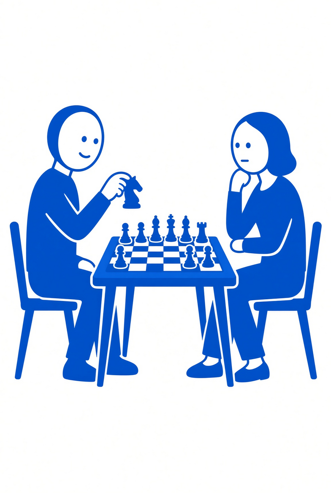
schaken
to play chess
regelmatigrang 4825Sport & gamesgetekend
- Scene
- two adults sit facing each other over a chessboard on a small table; one lifts a knight a little above the board to move it, while the other watches with the chin on one hand.
- Must read
- a hand lifting a chess piece above a chessboard.
- Avoid
- dice rolled on a board (spelen); a person alone with chin on fist and a thought bubble (denken); two people on a blanket with a basket (picknicken); cards held in a fan.
- Alt text
- Twee mensen zitten tegenover elkaar aan een bord met stukken; één tilt een paardje boven een vakje.
- Example
- Mijn opa wil met mij schaken.
My grandfather wants to play chess with me.
schaken.png · rang 4825 · B1 regelmatig · lexicon woorden.tsv
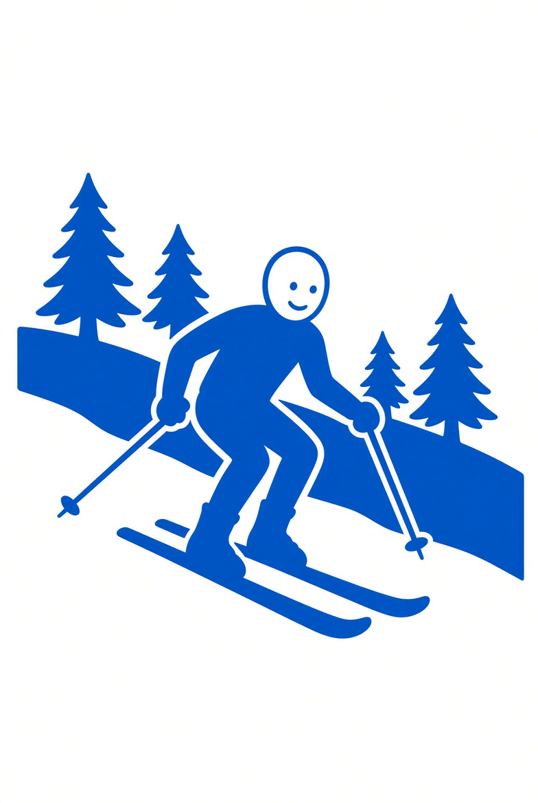
skiën
to ski
regelmatigrang 4827Sport & gamesgetekend
- Scene
- one adult goes down a snowy slope on two parallel skis, knees bent, two poles held back by the sides; a few pine trees stand on the slope behind. Nobody else is on the slope.
- Must read
- a person going downhill on skis with bent knees and poles.
- Avoid
- a skater on ice (schaatsen); a child on a playground slide (glijden); a person walking in snow (lopen); a child on a sledge.
- Alt text
- Iemand gaat met gebogen knieën en twee stokken een besneeuwde helling af.
- Example
- Wij skiën in de winter in Oostenrijk.
We ski in Austria in winter.
skien.png · rang 4827 · B1 regelmatig · lexicon woorden.tsv
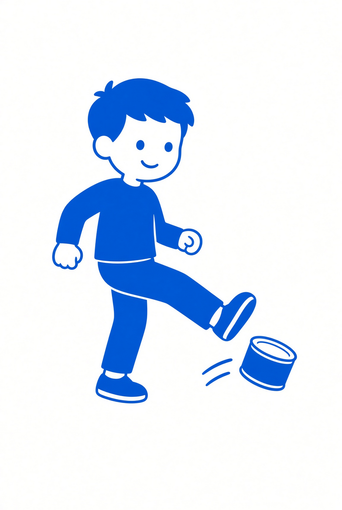
schoppen
to kick
regelmatigrang 5293Movement & positiongetekend
- Scene
- one child stands on an empty pavement and strikes an empty tin can with the toe of one shoe; the can has just left the foot and flies forward with two short motion lines, and the kicking leg is still stretched out. No ball, no goal and nobody else in the picture.
- Must read
- a toe striking a tin can that has just left the foot.
- Avoid
- a ball struck towards a goal with a net (voetballen); a foot caught on a stone (struikelen); a crate pushed with both palms (duwen); a can dropped into a bin (weggooien).
- Alt text
- Een kind trapt met de punt van de schoen tegen een leeg blikje, dat net wegvliegt.
- Example
- De jongen schopt de bal over het hek.
The boy kicks the ball over the fence.
schoppen.png · rang 5293 · B1 regelmatig · lexicon woorden.tsv

persen
to squeeze (juice)
regelmatigrang 5351Food & drinkgetekend
- Scene
- one adult presses half a lemon down onto a ribbed citrus juicer with the palm, twisting it; juice runs into the dish below and the other half waits on the table.
- Must read
- half a lemon pressed onto a juicer.
- Avoid
- a wet cloth twisted over a bucket (wringen); a knife cutting fruit (snijden); a jug pouring into a glass (gieten); a potato being peeled (schillen).
- Alt text
- Iemand drukt met de handpalm een halve citroen op een geribbeld schaaltje; het sap loopt eronder.
- Example
- Ik pers vier sinaasappels voor het ontbijt.
I squeeze four oranges for breakfast.
persen.png · rang 5351 · B1 regelmatig · lexicon woorden.tsv
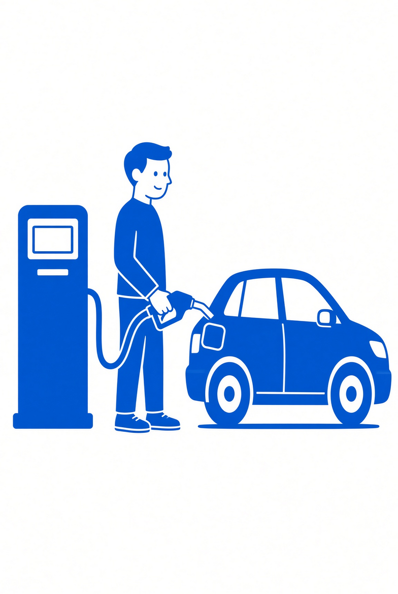
tanken
to fill up (fuel)
regelmatigrang 6199Transport & travelgetekend
- Scene
- one adult stands at a petrol pump holding the nozzle in the open fuel flap of a car, the hose looping back to the pump; the display on the pump is blank. The whole car is shown, including its rear bumper and both wheels, small enough that all of it stays fully inside the frame with white space on the right; place the pump, person and car in the middle of the frame.
- Must read
- a fuel nozzle in a car's open fuel flap.
- Avoid
- a car standing in a bay (parkeren); a bank card held to a terminal (pinnen); water sprayed from a hose (spuiten); a car being washed (wassen).
- Alt text
- Iemand houdt bij een pomp het mondstuk van de slang in de opening van de auto.
- Example
- Wij moeten nog tanken voor de lange reis.
We still have to fill up before the long journey.
tanken.png · rang 6199 · B1 regelmatig · lexicon woorden.tsv
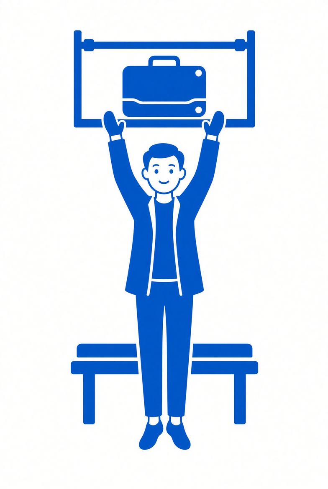
tillen
to lift
regelmatigrang 6204Movement & positiongetekend
- Scene
- one adult raises a suitcase above the head with both hands to put it on a high luggage rack, arms straight and up on the toes. A seat stands below the rack and the coat hangs open; nobody else is in the picture.
- Must read
- a suitcase raised above the head with straight arms.
- Avoid
- a box carried against the chest (dragen); a box handed between two people (geven); a box set down on the floor (zetten); fingertips stretched towards a jar (reiken).
- Alt text
- Iemand houdt een koffer met gestrekte armen boven het hoofd, onder een hoog rek.
- Example
- Ik kan deze zware koffer niet tillen.
I cannot lift this heavy suitcase.
tillen.png · rang 6204 · B1 regelmatig · lexicon woorden.tsv

bloeden
to bleed
regelmatigrang 6371Body & healthgetekend
- Scene
- one child sits on a step looking at a grazed knee; a small drop runs down the shin from the scrape and a bicycle lies on its side behind. One hand rests beside the knee, not touching it.
- Must read
- a drop running down from a grazed knee.
- Avoid
- a bandage wound round an arm (verbinden); tears on the cheeks (huilen); a foot caught on a stone (struikelen); a knee bumped on a table (stoten).
- Alt text
- Een kind zit op een stoep en kijkt naar een geschaafde knie; er loopt een druppel langs het been.
- Example
- Mijn vinger bloedt na de val.
My finger is bleeding after the fall.
bloeden.png · rang 6371 · B1 regelmatig · lexicon woorden.tsv

pinnen
to pay by card
regelmatigrang 6567Money & tradegetekend
- Scene
- one adult holds a bank card against a small card terminal on a shop counter, the screen of the terminal blank; the shop assistant behind the counter waits. A bag of shopping stands on the counter beside the terminal.
- Must read
- a bank card held to a card terminal.
- Avoid
- coins and notes on a counter (betalen); a cashier handing over a bag (verkopen); a phone held to the ear (bellen); a key pushed into a lock (steken).
- Alt text
- Iemand houdt een bankpasje tegen een klein apparaat op de toonbank.
- Example
- Kan ik hier met mijn pas pinnen?
Can I pay by card here?
pinnen.png · rang 6567 · B1 regelmatig · lexicon woorden.tsv
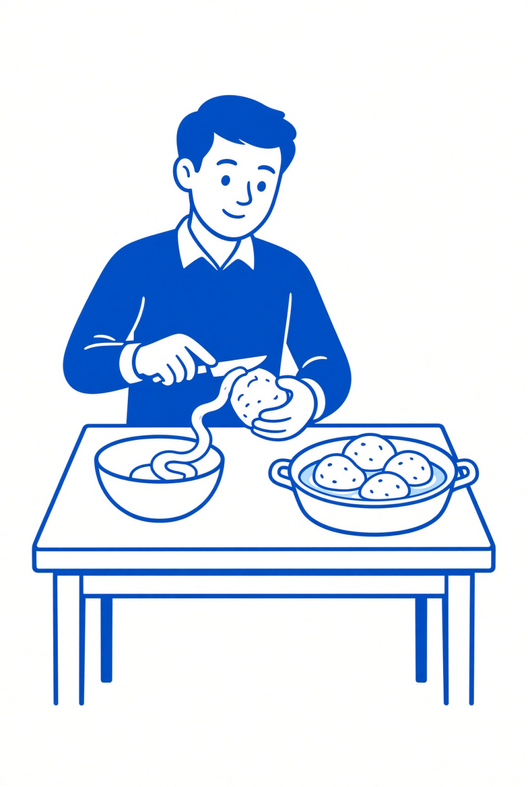
schillen
to peel
regelmatigrang 7584Food & drinkgetekend
- Scene
- one adult sits at a table and takes the skin off a potato with a small knife, a long curl of peel hanging from the blade into a bowl; finished potatoes sit in a pan of water.
- Must read
- a long curl of peel coming off a potato.
- Avoid
- a knife through bread (snijden); butter spread on bread (smeren); half a lemon pressed onto a juicer (persen); a pan on a stove (koken).
- Alt text
- Iemand haalt met een mesje een lange krul van een aardappel af boven een kom.
- Example
- Ik schil de appels voor de taart.
I peel the apples for the pie.
schillen.png · rang 7584 · B1 regelmatig · lexicon woorden.tsv

blaffen
to bark
regelmatigrang 7922Animalsgetekend
- Scene
- one dog stands with the front legs planted and the mouth wide open towards a postal worker at a garden gate; the postal worker leans back, holding an envelope. The dog's tail is straight up and its ears point forward.
- Must read
- a dog with its mouth wide open at a gate.
- Avoid
- a lion with its mouth open on a rock (brullen); a person shouting with cupped hands (roepen); a dog asleep (slapen); a dog on a lead.
- Alt text
- Een hond staat stevig op de voorpoten met de bek wijd open naar iemand bij het hek.
- Example
- De hond van de buren blaft de hele nacht.
The neighbours' dog barks all night.
blaffen.png · rang 7922 · B1 regelmatig · lexicon woorden.tsv
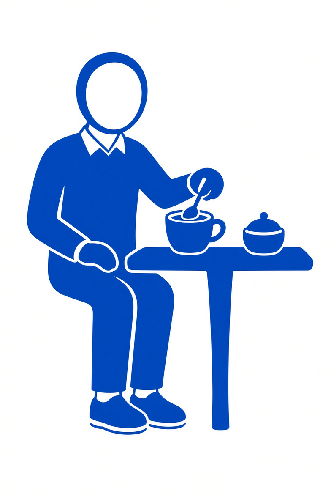
roeren
to stir
regelmatigrang 7950Food & drinkgetekend
- Scene
- one adult sits at a small table and turns a teaspoon round inside a cup of tea, a curved swirl line on the surface showing the circle; the other hand holds the cup steady by its handle and a sugar bowl stands beside it. No stove and no pan.
- Must read
- a spoon going round in a cup, with a swirl on the surface.
- Avoid
- a wooden spoon in a pan on a stove (koken); two streams poured into one bowl (mengen); a closed bottle in a fist (schudden); lips at a raised spoon (proeven).
- Alt text
- Iemand draait een theelepeltje rond in een kopje; op de thee staat een kringetje.
- Example
- Je moet de saus blijven roeren, anders brandt hij aan.
You have to keep stirring the sauce, otherwise it burns.
roeren.png · rang 7950 · B1 regelmatig · lexicon woorden.tsv

fluisteren
to whisper
regelmatigrang 8347Communication & languagegetekend
- Scene
- one adult cups a hand beside the mouth and leans close to a second adult's ear; the listener's eyes widen. Nothing else in the picture. The two stand side by side, the speaker's shoulder turned in, the listener's head tilted towards the hand.
- Must read
- a hand cupped between a mouth and a nearby ear.
- Avoid
- cupped hands calling across a street (roepen); two people facing each other and talking (praten); lips on a cheek (zoenen); a finger on the lips.
- Alt text
- Iemand houdt een hand bij de mond en buigt dicht naar het oor van een ander.
- Example
- In de bibliotheek moet je zachtjes fluisteren.
In the library you have to whisper quietly.
fluisteren.png · rang 8347 · B1 regelmatig · lexicon woorden.tsv

schommelen
to swing (on a swing)
regelmatigrang 8438Movement & positiongetekend
- Scene
- one child sits on a playground swing at the top of its forward arc, legs stretched out straight, both hands gripping the two chains and the hair blown back; the swing frame stands on grass. Nobody else is in the picture: no second swing and nobody waiting.
- Must read
- a child on a swing at the high point of its arc, legs out straight.
- Avoid
- two children both holding one swing seat (vechten om); a seesaw with one child up and one down (wippen); a child halfway down a slide (glijden); a person hanging on a rope against a wall (klimmen).
- Alt text
- Een kind zit op een plankje aan twee kettingen, hoog naar voren, met gestrekte benen.
- Example
- De kinderen schommelen op de speelplaats tot het donker wordt.
The children swing on the playground until it gets dark.
schommelen.png · rang 8438 · B1 regelmatig · lexicon woorden.tsv

gapen
to yawn
regelmatigrang 8529Body & healthgetekend
- Scene
- one adult sits at a desk with the mouth stretched wide open and the eyes squeezed shut, one hand half over the mouth and the other arm stretched out sideways.
- Must read
- a wide-open mouth with the eyes shut and a hand half over it.
- Avoid
- a person laughing with the head back (lachen); a person asleep at a desk (slapen); arms thrown up in a V (winnen); cupped hands round the mouth (roepen).
- Alt text
- Iemand aan een bureau heeft de mond wijd open en de ogen dicht, met een hand half voor de mond.
- Example
- Hij gaapt de hele vergadering, want hij heeft slecht geslapen.
He yawns throughout the meeting because he slept badly.
gapen.png · rang 8529 · B1 regelmatig · lexicon woorden.tsv